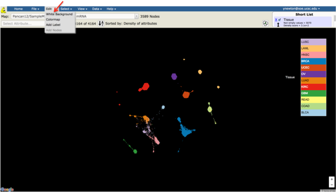
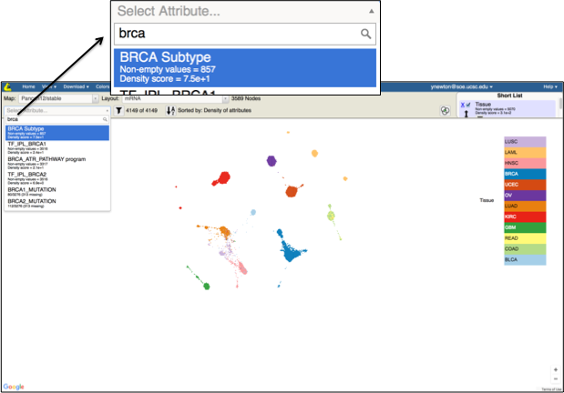
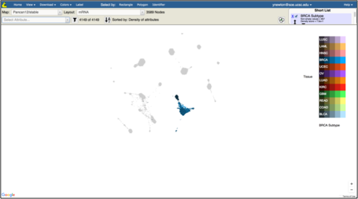
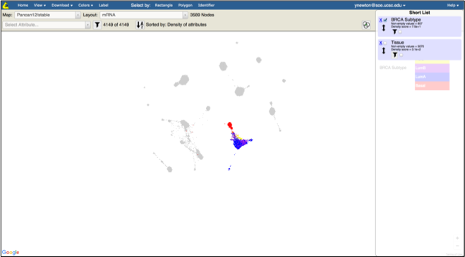
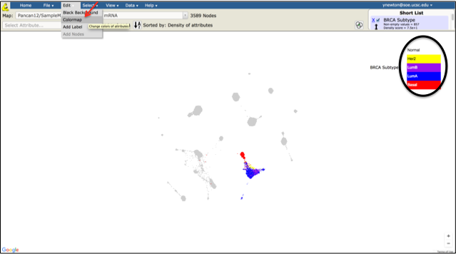
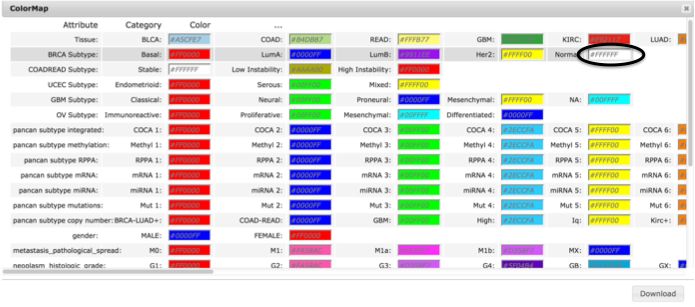
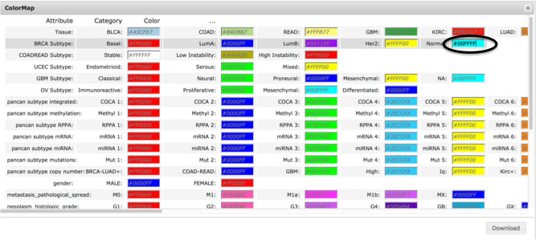
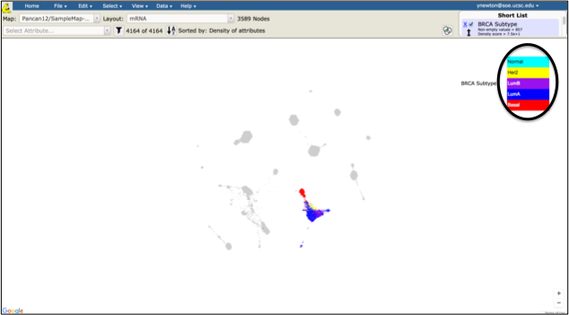
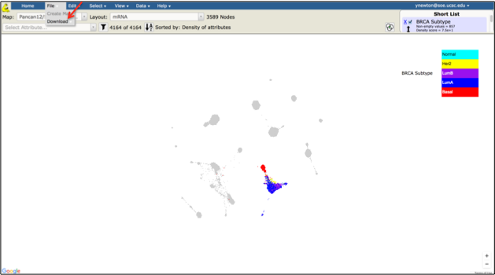
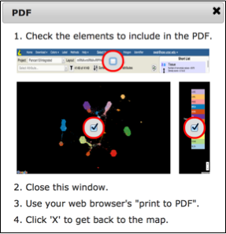

Objective:
View and download an image of breast cancer subtypes.
Skills Covered:
- Changing background color.
- Changing color assignment for a categorical attribute.
- Using zoom in and zoom out controls.
- Exporting map image to a pdf file.
Steps:
- Open Tumor Map
- If not logged in, enter login and password and click Sign In
- Click on Edit menu and click on White Background

- Observe that the map background changes to white
- Click on Select Attribute drop down list, type in “brca” and click on BRCA Subtype

- Observe that the legend on the right of the map changes to reflect an additional attribute and only BRCA tumors have the colors since only those tumors have the BRCA Subtype annotation

- Click on the Short List and uncheck Tissue checkbox

- Observe that the Normal-like tumors are colored white and, therefore, are not visible on the white background. We will adjust the color of those tumors next
- Click on the Edit menu and select Colormap

- A screen for configuring colors of categorical annotations will open. Notice that the Normal category in the BRCA Subtype annotation is configured to be white

- Change this color to #00FFFF or another desired color and press Enter

- Close the Colormap configuration screen
- Observe that the color of the Normal-like tumors in the map had changed to the newly configured color

- Click on the File menu and select Download, then PDF

- Click on X to close the popup window (if you wish to not print the legend to the downloaded image, just uncheck the legend checkbox on the right side before closing the popup window)

- Use your browser’s normal print function to save/print to PDF file